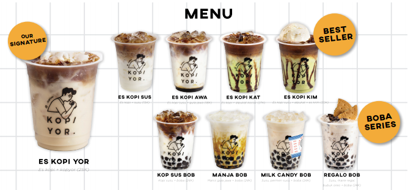
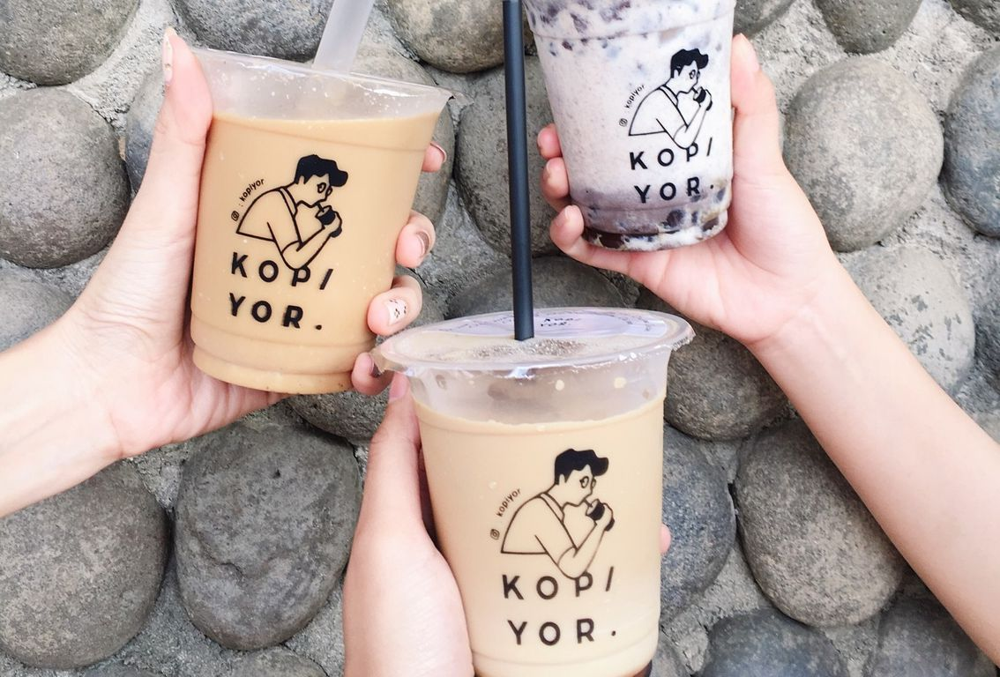

KOPI YOR
KOPI YOR sebagai “pelopor” perpaduan kopi dan kelapa kopyor, selain itu KOPI YOR memiliki konsep outlet yang menarik dan instagrammable. KOPI YOR memakai biji kopi perpaduan antara arabica dan robusta, sehingga menawarkan rasa yang berbeda dan cukup bersahabat bagi semua penikmat kopi. Nama Kopi Yor sendiri berasal dari outlet pertama gerai ini yang berada di Jalan Kelapa Kopyor, Kelapa Gading, Jakarta Utara.

